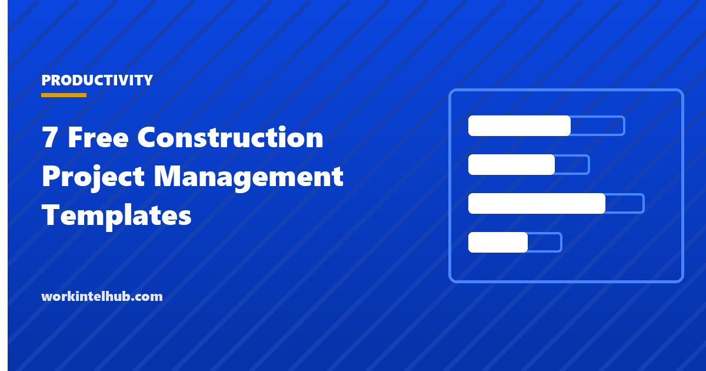

7 Free Construction Project Management Templates

Construction projects fail on paperwork as often as on the site. A delay that was never logged cannot be claimed, a change that was never priced cannot be billed, and an RFI that sat unanswered for three weeks becomes a dispute about who held the schedule. The seven templates here are the documents a general contractor or project manager keeps on every job, in the formats the trades and the owner expect.
They are a daily log, a project schedule, a budget and cost tracker, a change order form and log, an RFI log, a submittal log and a punch list. The Excel file has one sheet per document with totals and status counts; the Word and PDF versions print for the site office and the owner's file. Where a contract form (AIA, ConsensusDocs, or the owner's own) specifies a format, use it; these are the working documents behind it.
Download the templates
Free files: Word, Excel and PDF
Three files, free, no email required. Word to edit, Excel to track, PDF to print or share.
Templates open in Microsoft Word, Excel, Google Docs and Sheets, LibreOffice and any PDF reader. Free to use and adapt for your organisation.
The seven templates
| Template | What it records | Why it matters |
|---|---|---|
| Daily log | Weather, crews, hours, equipment, work done, deliveries, inspections, delays, safety | The contemporaneous record behind every delay claim and dispute |
| Project schedule | Phases and tasks with predecessors, dates, duration, owner and progress | The baseline the owner holds you to and the basis for extension requests |
| Budget tracker | Original budget, approved changes, committed, cost to date, forecast, variance by cost code | Forecast at completion is the number the owner and the bank want |
| Change order | Description, reason, cost and schedule impact, revised sum and date, three signatures | Unsigned changes are unpaid changes |
| RFI log | Questions to the design team with due dates and days open | Response times are the most common cause of schedule disputes |
| Submittal log | Product and shop drawing submissions and review actions | Late submittals delay procurement; the log shows where |
| Punch list | Deficiencies by location with trade, due date and verification | Closeout and the final payment depend on it |
The daily log is the one that wins disputes
Of the seven, the daily log is the document that decides claims. A weather delay claim needs the weather on the day and the work it stopped; a differing site condition claim needs the date it was found and what was done; a productivity claim needs crew sizes and hours. Courts and arbitrators give weight to records made at the time by the person who was there, and discount reconstructions. Fill it every day, including days with nothing to report, sign it, and keep it with the project file. Photographs with dates attached to the log entry strengthen it further.
The construction timesheet covers crew hours in the detail payroll needs; the daily log summarises them by trade.
Change orders, RFIs and submittals: the paper trail that protects margin
A change order documents scope that was not in the contract and prices it before the work is done. The form carries the reason because the reason decides who pays: owner requests and unforeseen conditions are usually compensable, errors in the contractor's own work are not. No work on a change should start without a signed form or a written directive to proceed, and the log should show every change from submission to approval so the revised contract sum is always known.
RFIs and submittals are where schedules quietly slip. The logs calculate days open and days in review so that a design team taking three weeks to answer a question shows up as a number in the weekly meeting rather than as an argument at the end. Most contracts set response periods; the log is how you prove they were exceeded.
Using the set on a small project
- Daily log and punch list on every project, however small.
- Schedule and budget tracker on anything over a few weeks; the forecast-at-completion column is the early warning.
- Change order form on every scope change, including the ones the owner thinks are free.
- RFI and submittal logs once a design team is involved.
- Weekly: update the schedule, budget forecast, open RFIs and submittals; review in the owner meeting with the logs on the table.
Key takeaways
- Seven documents cover most construction project management: daily log, schedule, budget, change order, RFI log, submittal log, punch list.
- The daily log, filled every day and signed, is the record that decides delay and condition claims.
- Price and sign every change before the work starts; the log keeps the revised contract sum current.
- Days-open counts on RFIs and submittals turn design-team delay into a number the meeting can act on.
Frequently asked questions
What templates does a construction project manager need?
At minimum a daily log, a schedule, a budget and cost tracker, a change order form and log, an RFI log, a submittal log and a punch list. Larger projects add a risk register, a safety log, a meeting minutes template and a closeout checklist. All seven core documents are in the download.
What should a construction daily log include?
Date, weather and temperature, each trade on site with crew size and hours, work performed and where, equipment on site and idle, deliveries, inspections, delays and their causes, safety incidents or near misses, visitors, and the superintendent's signature. Photographs with the date strengthen it.
How do I track construction project costs?
By cost code, with original budget, approved changes, revised budget, committed costs, cost to date, forecast at completion and variance. The forecast is the number that matters: it tells the owner and the lender what the job will cost before it is finished.
What is the difference between an RFI and a submittal?
An RFI (request for information) asks the design team a question about the drawings or specifications. A submittal sends the design team a product data sheet, sample or shop drawing for approval before procurement or fabrication. Both are logged with dates so response times are visible.
When should a change order be signed?
Before the changed work starts. A change order without a signature, or work done on a verbal instruction, is the most common reason contractors are not paid for extra work. Where the owner issues a written directive to proceed pending pricing, log it and price it promptly.